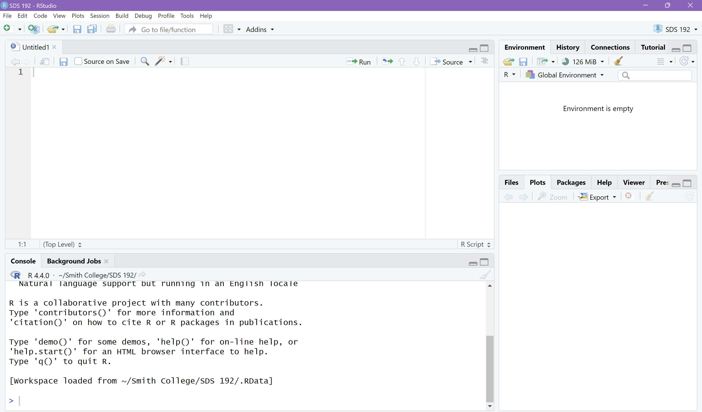

print("Hello world!")[1] "Hello world!"R FundamentalsSDS 192: Introduction to Data Science
Navigate over to the activity for today’s lecture on the website (via the Schedule).
R!
R

print("Hello world!")[1] "Hello world!"library(tidyverse)Warning: package 'ggplot2' was built under R version 4.4.3Warning: package 'tidyr' was built under R version 4.4.3Warning: package 'purrr' was built under R version 4.4.3Warning: package 'stringr' was built under R version 4.4.3Warning: package 'lubridate' was built under R version 4.4.3── Attaching core tidyverse packages ──────────────────────── tidyverse 2.0.0 ──
✔ dplyr 1.1.4 ✔ readr 2.1.5
✔ forcats 1.0.0 ✔ stringr 1.6.0
✔ ggplot2 4.0.1 ✔ tibble 3.2.1
✔ lubridate 1.9.4 ✔ tidyr 1.3.1
✔ purrr 1.2.0
── Conflicts ────────────────────────────────────────── tidyverse_conflicts() ──
✖ dplyr::filter() masks stats::filter()
✖ dplyr::lag() masks stats::lag()
ℹ Use the conflicted package (<http://conflicted.r-lib.org/>) to force all conflicts to become errorsmtcars |> select(mpg, hp) mpg hp
Mazda RX4 21.0 110
Mazda RX4 Wag 21.0 110
Datsun 710 22.8 93
Hornet 4 Drive 21.4 110
Hornet Sportabout 18.7 175
Valiant 18.1 105
Duster 360 14.3 245
Merc 240D 24.4 62
Merc 230 22.8 95
Merc 280 19.2 123
Merc 280C 17.8 123
Merc 450SE 16.4 180
Merc 450SL 17.3 180
Merc 450SLC 15.2 180
Cadillac Fleetwood 10.4 205
Lincoln Continental 10.4 215
Chrysler Imperial 14.7 230
Fiat 128 32.4 66
Honda Civic 30.4 52
Toyota Corolla 33.9 65
Toyota Corona 21.5 97
Dodge Challenger 15.5 150
AMC Javelin 15.2 150
Camaro Z28 13.3 245
Pontiac Firebird 19.2 175
Fiat X1-9 27.3 66
Porsche 914-2 26.0 91
Lotus Europa 30.4 113
Ford Pantera L 15.8 264
Ferrari Dino 19.7 175
Maserati Bora 15.0 335
Volvo 142E 21.4 109mtcarsselect()mtcars |> select(mpg, hp) mpg hp
Mazda RX4 21.0 110
Mazda RX4 Wag 21.0 110
Datsun 710 22.8 93
Hornet 4 Drive 21.4 110
Hornet Sportabout 18.7 175
Valiant 18.1 105
Duster 360 14.3 245
Merc 240D 24.4 62
Merc 230 22.8 95
Merc 280 19.2 123
Merc 280C 17.8 123
Merc 450SE 16.4 180
Merc 450SL 17.3 180
Merc 450SLC 15.2 180
Cadillac Fleetwood 10.4 205
Lincoln Continental 10.4 215
Chrysler Imperial 14.7 230
Fiat 128 32.4 66
Honda Civic 30.4 52
Toyota Corolla 33.9 65
Toyota Corona 21.5 97
Dodge Challenger 15.5 150
AMC Javelin 15.2 150
Camaro Z28 13.3 245
Pontiac Firebird 19.2 175
Fiat X1-9 27.3 66
Porsche 914-2 26.0 91
Lotus Europa 30.4 113
Ford Pantera L 15.8 264
Ferrari Dino 19.7 175
Maserati Bora 15.0 335
Volvo 142E 21.4 109R understands values to be of a certain type:
3.29 # double[1] 3.293L # integer[1] 3"SDS 192" # character[1] "SDS 192"TRUE # logical[1] TRUESys.Date() [1] "2026-01-20"c() (shorthand for concatenate/combine)c(1, 2, 3, 4)[1] 1 2 3 4c("Northampton", "Hadley", "Easthampton", "Amherst")[1] "Northampton" "Hadley" "Easthampton" "Amherst" $ accessor)df col1 col2 col3
1 1 TRUE a
2 5 FALSE b
3 6 TRUE c
4 7 TRUE ddf$col1[1] 1 5 6 7<- symbol assigns a value to a variable
= is okay, but not preferredurban_data for a dataset that refers to demographic data in a citytest_scores for a vector of test scores from a particular classWhat kind of object is this in R? What is its type?
temps <- c(47.3, 55.6, 48.3)What would happen if I were to do the following in R?
val <- 34
val <- val + 1R?R will be listed in the Environment tab in the upper right hand corner of RStudio.rm(temps)
list: used to store objects of various typeslist("autumn", c(2, 4, 6), TRUE, mtcars[1:2, 1:4])[[1]]
[1] "autumn"
[[2]]
[1] 2 4 6
[[3]]
[1] TRUE
[[4]]
mpg cyl disp hp
Mazda RX4 21 6 160 110
Mazda RX4 Wag 21 6 160 110matrix: 2D data structure used to store values of same type
list of vectors (e.g. data frame)matrix(c(1, 3, 7, 6), nrow = 2, ncol = 2, byrow = TRUE) [,1] [,2]
[1,] 1 3
[2,] 7 6RRR+, -, *, /
^ or ** for exponentiation%% for mod (remainder of a quotient of two numbers)<, <=, >, >=
== for equivalence!= for non-equivalence& (AND), | (OR), ! (NOT)y = f(x)function_name <- function(input1, ...){
# action to input
# return an output with return(__)
}pizza <- function(money){
money <- money - 5
return(money)
}
pizza(15)[1] 10?FUNCTION_NAME in to the Console loads info about that function?round()
Convert the following variable name into something descriptive in snake case:
a <- round(pi, digits = 2)Run the code in your Console. How can we find this variable in RStudio once we run this code?
RR can work just like a calculator!
a <- 2
b <- 3
sum(a,b)[1] 5Why does this produce an error?
c <- "3"
sum(c, c)Error in `sum()`:
! invalid 'type' (character) of argumentR can concatenate strings!
word1 <- "Harry"
word2 <- "Sally"
paste("When", word1, "Met", word2, sep = " ")[1] "When Harry Met Sally"class() returns the class of the values in a vectorlength() returns the number of values in a vectoris.na() for each value, returns whether the value is an NA valuesum() returns the sum of the values in a vectormax() returns the maximum value in a vectorrank() returns the ranking of a value in a vectorR has other functions for accomplishing statistical, mathematical, and ordering operationsunique() returns the unique values of a vectortable() returns the distribution of unique values of a vectorHow would I find the sum of the third column in this data frame, which I have named df?
col1 col2 col3
1 1 2 3
2 5 4 6
3 7 6 9View(): Opens a tab to view the data frame as a tablehead(): returns first six rows of datasetnames(): returns the dataset’s column namesnrow(): returns the number of rows in the datasetncol(): returns the number of columns in the datasetR.R|> or %>%length(unique(mtcars$am))[1] 2mtcars |> pull(am) |> unique() |> length()[1] 2R FunctionsNA in RWe can use na.rm = TRUE to ignore NA values in math functions.
vals <- c(1, 2, NA, 4, NA, 6)
sum(vals)[1] NAsum(vals, na.rm = TRUE)[1] 13